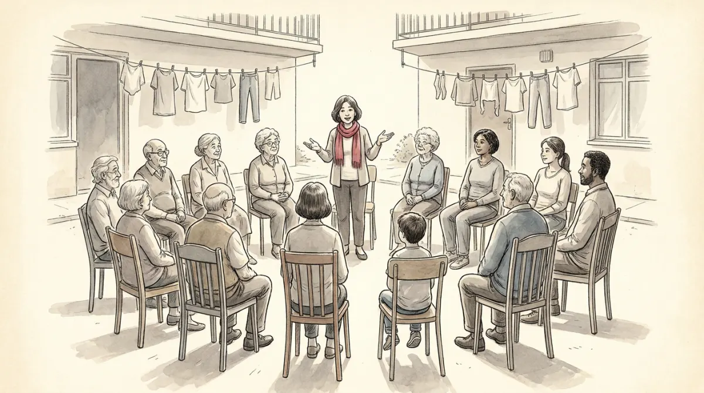

Tuesday evening, Via Larga 12. The building's yearly meeting, and one item on the agenda: the elevator is dying, and replacing it costs twelve thousand euros. Signora Bruni from the fourth floor wants the good German model. Marco from the ground floor never uses the elevator and wants to pay nothing. The Rossi family wants the cheap one, installed before the grandmother's hip operation. Twelve households, one shaft, not enough money for everyone to get what they want.
That is politics. Not a metaphor for politics: an actual, complete instance of it. The course's definition: politics is the social activity through which human beings decide how their shared life is organized, and it exists because of one permanent fact, disagreement over scarce things. Money, space, time, respect. If the building had infinite money or the neighbors had identical wishes, there would be nothing to decide and no politics. Scale the courtyard up ten million times, swap the elevator for hospitals, borders, and taxes, and you have the thing this course studies.
Every abstraction in this course will be walked through Via Larga 12 first. When the exam says "the authoritative allocation of values", you will see Signora Bruni's meeting, and the sentence will unpack itself.
What is actually being fought over, and with what? The course gives you three names and three definitions. All three are exam currency, and each one is visible in the courtyard.
Dahl's classic: A has power over B to the extent that A can get B to do something B would not otherwise do. Notice what the definition is: a relationship, not a possession. Power is not a thing Signora Bruni keeps in a drawer; it exists in the moment Marco votes for the German elevator he did not want. If nobody ever changes what they do because of her, she has none, whatever her title says.
Now the pair the exam loves. A robber in the stairwell says "give me fifty euros" and you comply: that is power. The tax office writes "give me fifty euros" and you comply while believing it has the right to ask: that is authority, legitimate power. Same fifty euros, same compliance, completely different animal, because authority survives the moment the threat looks away and power does not. When the administrator of Via Larga 12 announces the vote's result and even the losers pay their share, the building is running on authority.
Easton zooms out to what politics does: it is the authoritative allocation of values, the binding distribution of benefits, rewards, and penalties. Who gets the elevator, who pays, who is fined for the balcony no one approved. "Values" here does not mean opinions; it means the things people value, allocated in a way everyone is bound by.
Power is the capacity to make others do what they otherwise would not (Dahl). Authority is power regarded as legitimate, carrying the recognized right to command (Weber). Every MCQ on this pair hides the word "legitimate" in one option. Find it.
The course then slices politics along a second line, and it is subtler: politics as an arena versus politics as a process.
Politics as an arena says: politics is what happens in certain places, the polis, the State, the machinery of government, the meeting room on Tuesday. This view draws a border between public life (political) and private life (personal). Inside the room, politics; at your own dinner table, not.
Politics as a process says: politics is a way of deciding, wherever it happens. Any time scarce resources get distributed through conflict and its resolution, who gets what, when, and how, that is politics, in a parliament or in a family. The process view then catalogs the three ways the struggle is conducted, and you can watch all three in the courtyard:
One more course point hides here: disagreement extends to what counts as political at all. Whether the wage gap inside a household is "private" or "political" is itself a political fight, which is exactly the arena-versus-process border being contested.
People have argued about the courtyard for 2500 years. The discipline's story is the slow shift from asking how should it go to asking how does it actually go.
What makes any of this a science? The course's answer, via Popper: formulating hypotheses ("A causes B"), testing them against observation, and building theories, unified sets of verified hypotheses that explain classes of phenomena and can always be tested again. The object is messy humans, so the fit is never physics-tight, but the method is the same loop: guess, check, revise.
Modern political science looks at the same reality through different lenses, and the exam expects you to recognize each by its silhouette. Try them all on one everyday puzzle: why does anyone bother to vote?
Watch what people observably do, and measure it. Born in the late XIX and XX century: study voters, legislators, and politicians through surveys, election returns, roll calls. The behaviouralist answers our question with data: turnout rises with education and age, falls with rain, correlates with habit. No armchair, no ideal citizen, just observed behavior in bulk.
Model people as rational calculators. From the 1970s: formal models where actors with full rationality and full knowledge weigh costs against benefits. Here the lens produces a famous embarrassment: one vote almost never decides an election, so the expected benefit is nearly zero and a rational citizen should stay home. Since millions vote anyway, either the model needs a "duty" term or the assumptions are doing too much work. The exam likes exactly this: rational choice is powerful and rests on strong assumptions.
Interests are made, not given. From the 1980s: identities and interests result from social interaction; there is no objective political reality sitting out there untouched by ideas. The constructivist answers: people vote because voting is part of who they have learned to be, a citizen identity built by schools, families, anthems. Change the shared story and you change the "interest".
Ask who the framework itself is serving. Feminism, postcolonialism, green thought: challenge the status quo, uncover inequalities the neutral-looking methods miss, and question positivism itself. The critical answer to our puzzle: asking "why vote?" already accepts the menu as given; ask instead whose questions never make the ballot, and whose non-voting is alienation rather than laziness. (You will hear this echo in Poli-08's cleavages and Poli-11's populism.)
Political science today keeps three rooms, and this course visits all of them:
| Comparative politics | Describes and explains similarities and differences across political systems: institutions, actors (voters, parties, movements), processes. Most of this course lives here (Poli-02 to Poli-11). |
|---|---|
| Political theory | The history of political thought plus today's ethical questions: democracy, equality, justice, the environment. The normative tradition, alive and well. |
| International relations | Born after World War I around one urgent question: how do states achieve peace and cooperation when no authority stands above them? Poli-12 lives here. |
One closing pressure point the course flags on day one: the discipline grew up State-centred (the Weberian habit of treating the State as the locus of highest authority, with international politics as anarchy above it). Globalization is bending that frame: supranational, international, and transnational politics blur the domestic-international line. Keep this; Poli-12 is entirely about it.
Power, authority, or the allocation of values? And arena or process? The exam expects the reflex; the courtyard makes it easy.
| Politics | the social activity of deciding how shared life is organized, rooted in disagreement over scarce resources |
| Power (Dahl) | A gets B to do what B would not otherwise do; a relationship, not a possession |
| Authority (Weber) | legitimate power: commands complied with because the right to command is recognized |
| Values (Easton) | politics allocates valued things (benefits, rewards, penalties) authoritatively, bindingly |
| Arena view | politics = what happens in public places of government (polis, polity); public vs private border |
| Process view | politics = a way of deciding scarce allocations anywhere: coercion, agenda-setting, persuasion |
| Science of politics | hypotheses tested against observation, built into revisable theories (Popper) |
| Four lenses | behaviouralism (observe), rational choice (calculate), constructivism (identities are built), critical (question the frame) |
| Three rooms | comparative politics, political theory, international relations |
One courtyard, three currencies, two views, four lenses, three rooms. That is the whole lecture.
Six questions in the written test's definition-and-typology style.